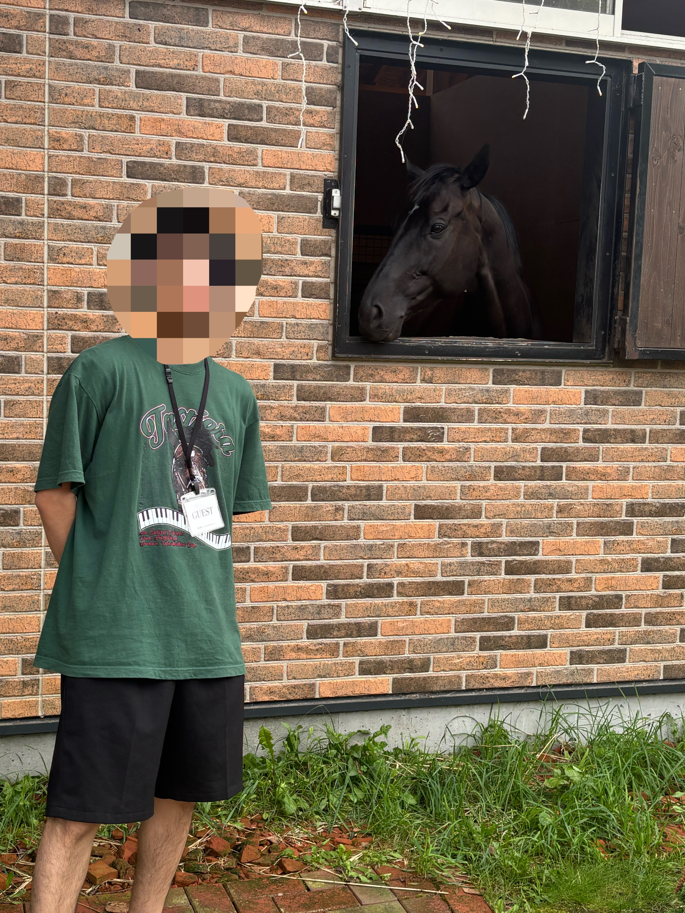

🏇 当たらなくてもよかっぺよ！
茨城県民が作ったAI予想サイト
🎯 厳選レース 的中率
-%
💰 厳選レース 回収率
-%
※集計期間: 11/7~
💡 使い方ガイド:
左上の「☰ メニュー」ボタンを開き、日付 ＞ 競馬場 ＞ レース番号 の順にクリックしてください。
全頭のAI予測スコアと、期待値の高い厳選レース（🔥 勝負）の買い目を確認できます。
障害レースは対象外なのでごじゃっぺです。
※外れてもしゃあんめよ
左上の「☰ メニュー」ボタンを開き、日付 ＞ 競馬場 ＞ レース番号 の順にクリックしてください。
全頭のAI予測スコアと、期待値の高い厳選レース（🔥 勝負）の買い目を確認できます。
障害レースは対象外なのでごじゃっぺです。
※外れてもしゃあんめよ

開発者からのコメント
「いやどうも！私が丹精込めて作ったAIです。LightGBMと血統データを掛け合わせ、毎週末のレースを一生懸命予想しています。当たっても外れても、よかっぺよ！」
📚 開発者のAI参考書籍（スポンサーリンク）
 | 価格:2090円 |
 | プロ馬券師たちから学ぶ賢い券種選び 買い方のコツを掴めば回収率は大きく上がる！ [ 競馬王編集部 ] 価格:2035円 |
11月7日(土) 福島 1R ｜ ダート1700m
🔥 勝負レース
| 順位 | 馬名 | AIスコア |
|---|---|---|
| 1位 | ジェミニディウ | 0.463 |
| 2位 | フィールザウィル | 0.424 |
| 3位 | クリコキアナ | 0.280 |
| 4位 | ティエルニート | 0.234 |
| 5位 | マルジョレーヌ | 0.220 |
| 6位 | アフィーリア | 0.211 |
| 7位 | カフジペピーノ | 0.172 |
| 8位 | コウユーキミガイテ | 0.170 |
| 9位 | コルヴィリア | 0.162 |
| 10位 | キタノリキュール | 0.158 |
| 11位 | ブーケフォーミー | 0.146 |
| 12位 | ヴィシーチェック | 0.127 |
| 13位 | アルフェラッツ | 0.126 |
| 14位 | ヴァンデエス | 0.059 |
| 15位 | メネルブ | 0.050 |
🎫 推奨買い目: 三連複1頭軸流し (10点)
軸馬: ジェミニディウ相手: フィールザウィル, クリコキアナ, ティエルニート, マルジョレーヌ, アフィーリア
11月7日(土) 福島 2R ｜ 芝2000m
| 順位 | 馬名 | AIスコア |
|---|---|---|
| 1位 | ハルカカナタ | 0.433 |
| 2位 | ジーフォーリア | 0.367 |
| 3位 | ジュンアマンドラ | 0.201 |
| 4位 | エーテルワーム | 0.196 |
| 5位 | ラインディアーナ | 0.186 |
| 6位 | インヴィディア | 0.173 |
| 7位 | アーバンアート | 0.172 |
| 8位 | アモロロプーロ | 0.172 |
| 9位 | ゴルタン | 0.164 |
| 10位 | プリズンブレイク | 0.161 |
| 11位 | リバーススイープ | 0.148 |
| 12位 | サーギュスターヴ | 0.145 |
| 13位 | コスモコリウス | 0.144 |
| 14位 | アーデルプレミア | 0.132 |
| 15位 | コイゾラ | 0.126 |
| 16位 | プレシャスタイム | 0.080 |
11月7日(土) 福島 3R ｜ ダート1700m
| 順位 | 馬名 | AIスコア |
|---|---|---|
| 1位 | レッドアバンドーネ | 0.394 |
| 2位 | サンライズブレイド | 0.262 |
| 3位 | スーパーユタカ | 0.252 |
| 4位 | ソリドゥス | 0.248 |
| 5位 | ポッドレーヴ | 0.242 |
| 6位 | プリマアルバ | 0.219 |
| 7位 | バトゥル | 0.207 |
| 8位 | ロードリバイバル | 0.164 |
| 9位 | メテオテソーロ | 0.156 |
| 10位 | フェスティヴガッツ | 0.153 |
| 11位 | ヴァーヴヴァーヴ | 0.147 |
| 12位 | レオガバナー | 0.145 |
| 13位 | マルスフィス | 0.141 |
| 14位 | サスケソルトバーン | 0.138 |
| 15位 | ヴァイタリズム | 0.134 |
11月7日(土) 福島 4R ｜ ダート2400m
| 順位 | 馬名 | AIスコア |
|---|---|---|
| 1位 | リバーソニック | 0.326 |
| 2位 | アスクドゥチャンプ | 0.267 |
| 3位 | ロードヴェリタス | 0.267 |
| 4位 | フォーチュンローズ | 0.245 |
| 5位 | タニセンゴールド | 0.240 |
| 6位 | ダイシンレアレア | 0.239 |
| 7位 | フィサブロス | 0.235 |
| 8位 | グランアルト | 0.233 |
| 9位 | ステイアンビシャス | 0.226 |
| 10位 | エクストラプッシュ | 0.149 |
| 11位 | レディトゥフライト | 0.143 |
| 12位 | ピティロディア | 0.134 |
| 13位 | ヨーゼフ | 0.106 |
| 14位 | マーズローバー | 0.073 |
| 15位 | ハイドパーク | 0.060 |
| 16位 | スノーディーヴァ | 0.056 |
11月7日(土) 福島 5R ｜ 芝1200m
| 順位 | 馬名 | AIスコア |
|---|---|---|
| 1位 | マヴリスキア | 0.239 |
| 2位 | ブランル | 0.219 |
| 3位 | ショウブファミリー | 0.218 |
| 4位 | レディシャンス | 0.210 |
| 5位 | ブルーレジェンド | 0.209 |
| 6位 | デルタウィング | 0.208 |
| 7位 | トウカイロザート | 0.206 |
| 8位 | エスシーザラ | 0.195 |
| 9位 | ジェンジューファー | 0.179 |
| 10位 | ヴィクトリドライブ | 0.177 |
| 11位 | ツクバディーヴァ | 0.168 |
| 12位 | ボールドサンダー | 0.167 |
| 13位 | メイチャトラー | 0.166 |
| 14位 | ビッグダイヤ | 0.164 |
| 15位 | スウィートルミナス | 0.141 |
| 16位 | ニシノカグヤ | 0.136 |
11月7日(土) 福島 6R ｜ 芝2600m
| 順位 | 馬名 | AIスコア |
|---|---|---|
| 1位 | マーゴットドライ | 0.344 |
| 2位 | ノリマル | 0.295 |
| 3位 | ドンテスタマスター | 0.263 |
| 4位 | ドリームプレミア | 0.235 |
| 5位 | オブラプリーマ | 0.211 |
| 6位 | バルドル | 0.208 |
| 7位 | カドドゥディエ | 0.204 |
| 8位 | マーゴットレジーナ | 0.203 |
| 9位 | ニホンピロゴルディ | 0.189 |
| 10位 | フィエールシャンテ | 0.188 |
| 11位 | ボンボンベイビー | 0.184 |
| 12位 | アマンヘセル | 0.179 |
| 13位 | ペリプルス | 0.116 |
| 14位 | オニノウタゲ | 0.067 |
| 15位 | マイネルミラケル | 0.061 |
| 16位 | オメガストリーム | 0.052 |
11月7日(土) 福島 7R ｜ 芝1200m
| 順位 | 馬名 | AIスコア |
|---|---|---|
| 1位 | グレイシエーション | 0.376 |
| 2位 | セゾンデフィーユ | 0.293 |
| 3位 | キャナルクルーズ | 0.243 |
| 4位 | ハクサンテドリガワ | 0.231 |
| 5位 | カイショー | 0.223 |
| 6位 | フロムレイブン | 0.222 |
| 7位 | ラスベガスサイン | 0.201 |
| 8位 | オンザヴィーナス | 0.191 |
| 9位 | フィラーエ | 0.173 |
| 10位 | プリュノワール | 0.168 |
| 11位 | ベレーバスク | 0.158 |
| 12位 | シュークリーム | 0.142 |
| 13位 | ラブアイミー | 0.111 |
| 14位 | ダイユウヴェンティ | 0.109 |
| 15位 | キタノクニカラ | 0.085 |
| 16位 | ヴィヴァラリス | 0.074 |
11月7日(土) 福島 8R ｜ ダート1150m
| 順位 | 馬名 | AIスコア |
|---|---|---|
| 1位 | モズオウンゴール | 0.403 |
| 2位 | スイーヴル | 0.296 |
| 3位 | マダムイグレイン | 0.280 |
| 4位 | グラスゴー | 0.248 |
| 5位 | ヨドノゴールド | 0.234 |
| 6位 | メラヴィリオーザ | 0.222 |
| 7位 | クリノミニスター | 0.185 |
| 8位 | マジェステラ | 0.181 |
| 9位 | ロードクラシコ | 0.176 |
| 10位 | ユーダイモニア | 0.139 |
| 11位 | ガルディーノ | 0.137 |
| 12位 | ミヤラティーニ | 0.135 |
| 13位 | レオナルドスター | 0.132 |
| 14位 | カツノテンス | 0.126 |
| 15位 | マダムカマラード | 0.069 |
| 16位 | アイランドピーク | 0.038 |
11月7日(土) 福島 9R ｜ 芝2000m
| 順位 | 馬名 | AIスコア |
|---|---|---|
| 1位 | ディアアズール | 0.294 |
| 2位 | ダノンハドソン | 0.292 |
| 3位 | ダーコ | 0.290 |
| 4位 | ウインマニフィーク | 0.286 |
| 5位 | クイーンズレイン | 0.269 |
| 6位 | レダアトミカ | 0.228 |
| 7位 | アッシズオブローズ | 0.203 |
| 8位 | デリシュー | 0.190 |
| 9位 | ブランドブラン | 0.178 |
| 10位 | トレベルオール | 0.169 |
| 11位 | サクラアドリア | 0.115 |
| 12位 | マイネルクオリア | 0.114 |
| 13位 | ゼットエイト | 0.113 |
| 14位 | リリエンフェルト | 0.104 |
| 15位 | リアルセンター | 0.100 |
| 16位 | マイネルダンク | 0.056 |
11月7日(土) 福島 10R ｜ 芝1200m
| 順位 | 馬名 | AIスコア |
|---|---|---|
| 1位 | タナブイハチターボ | 0.315 |
| 2位 | カレンデュラ | 0.291 |
| 3位 | タマモブラウンタイ | 0.264 |
| 4位 | ミルトメロディー | 0.237 |
| 5位 | オオナミコナミ | 0.233 |
| 6位 | ダンケルド | 0.232 |
| 7位 | ピアストイヤーズ | 0.191 |
| 8位 | ヴァンヴィーヴ | 0.189 |
| 9位 | ライツユーアップ | 0.175 |
| 10位 | ホウオウヘッセン | 0.157 |
| 11位 | サンポーニャ | 0.148 |
| 12位 | デアリングエア | 0.144 |
| 13位 | シラヌイ | 0.139 |
| 14位 | アイルドリアン | 0.110 |
| 15位 | バンブルビー | 0.105 |
| 16位 | ラスティングスノー | 0.068 |
11月7日(土) 福島 11R ｜ 芝1200m
| 順位 | 馬名 | AIスコア |
|---|---|---|
| 1位 | アサクサグレース | 0.365 |
| 2位 | ライラ | 0.363 |
| 3位 | ハリウッドメモリー | 0.313 |
| 4位 | カーヌスティ | 0.285 |
| 5位 | エマヌエーレ | 0.253 |
| 6位 | ジュンヴァンケット | 0.192 |
| 7位 | メルトユアハート | 0.190 |
| 8位 | スマイルアップ | 0.189 |
| 9位 | カウンターセブン | 0.182 |
| 10位 | クリエープキー | 0.130 |
| 11位 | ドゥアムール | 0.117 |
| 12位 | アメリカンマーチ | 0.115 |
| 13位 | エコロジーク | 0.084 |
| 14位 | ビーアイフォルテ | 0.083 |
| 15位 | ルミノメテオール | 0.078 |
| 16位 | タツダイヤモンド | 0.063 |
11月7日(土) 福島 12R ｜ ダート1700m
| 順位 | 馬名 | AIスコア |
|---|---|---|
| 1位 | コイオステソーロ | 0.358 |
| 2位 | ビンバラ | 0.337 |
| 3位 | キープシャイニング | 0.279 |
| 4位 | アーディアイリ | 0.260 |
| 5位 | エイシンマールス | 0.241 |
| 6位 | アスクガンバーレ | 0.237 |
| 7位 | ポンピエ | 0.232 |
| 8位 | グレイスフルマーチ | 0.217 |
| 9位 | エコロスパーダ | 0.217 |
| 10位 | ベルアズーロ | 0.159 |
| 11位 | ブリスフル | 0.125 |
| 12位 | ヤスケ | 0.102 |
| 13位 | イサギ | 0.088 |
| 14位 | ゲレーロアスール | 0.083 |
| 15位 | オリジナルアポジー | 0.065 |
11月8日(日) 福島 1R ｜ ダート1150m
| 順位 | 馬名 | AIスコア |
|---|---|---|
| 1位 | ドナビッグベン | 0.398 |
| 2位 | アースグリッパー | 0.364 |
| 3位 | イリスロッソ | 0.286 |
| 4位 | タガノカハンカ | 0.279 |
| 5位 | ベアアミーチ | 0.257 |
| 6位 | ヴォルールドクール | 0.166 |
| 7位 | サノノソルジャー | 0.166 |
| 8位 | ヒガンバナ | 0.147 |
| 9位 | シウンハゴロモ | 0.145 |
| 10位 | オラパ | 0.144 |
| 11位 | シースファイア | 0.141 |
| 12位 | ルージュロア | 0.130 |
| 13位 | スマイルハープ | 0.130 |
| 14位 | マルモタワー | 0.099 |
| 15位 | アスコットペスカ | 0.097 |
| 16位 | ブラックブレット | 0.051 |
11月8日(日) 福島 2R ｜ 芝1200m
| 順位 | 馬名 | AIスコア |
|---|---|---|
| 1位 | ニホンノヨアケゼヨ | 0.332 |
| 2位 | バクソウシャチョウ | 0.311 |
| 3位 | アヴァロン | 0.298 |
| 4位 | マナベラ | 0.242 |
| 5位 | ソースウィート | 0.241 |
| 6位 | ハルガスミ | 0.187 |
| 7位 | ゴールドショーマン | 0.187 |
| 8位 | フォンターナドーロ | 0.176 |
| 9位 | エクセレントワード | 0.167 |
| 10位 | メイケイリチャード | 0.158 |
| 11位 | ライフイズアート | 0.155 |
| 12位 | メジェグレイス | 0.155 |
| 13位 | レオライジング | 0.114 |
| 14位 | アンドヴェローナ | 0.105 |
| 15位 | ユタライト | 0.086 |
| 16位 | ピリナカピリナ | 0.086 |
11月8日(日) 福島 3R ｜ ダート1700m
| 順位 | 馬名 | AIスコア |
|---|---|---|
| 1位 | ルージュボニート | 0.383 |
| 2位 | ランスノーブル | 0.278 |
| 3位 | プレイメイカー | 0.273 |
| 4位 | ギンケイ | 0.271 |
| 5位 | チャチャコマニ | 0.262 |
| 6位 | クシマトゥルー | 0.237 |
| 7位 | サザンティスプーン | 0.232 |
| 8位 | アンリーベイビー | 0.219 |
| 9位 | エリーニック | 0.197 |
| 10位 | クッカユフラ | 0.155 |
| 11位 | ミヤジテン | 0.131 |
| 12位 | ノーブルクインダム | 0.119 |
| 13位 | ジョアン | 0.109 |
| 14位 | テクノピーチ | 0.086 |
| 15位 | サツキバラード | 0.049 |
11月8日(日) 福島 4R ｜ 芝2750m
🔥 勝負レース
| 順位 | 馬名 | AIスコア |
|---|---|---|
| 1位 | ナヴァラトゥナ | 0.475 |
| 2位 | サマーアゲイン | 0.421 |
| 3位 | アスクエピソード | 0.357 |
| 4位 | ニシノブレイゼスト | 0.334 |
| 5位 | アレナリア | 0.306 |
| 6位 | シュハリ | 0.258 |
| 7位 | スノーリン | 0.226 |
| 8位 | バダジェフスカ | 0.174 |
| 9位 | ノブピースオブラブ | 0.170 |
| 10位 | ディアスポラ | 0.165 |
| 11位 | ミスティックレイン | 0.113 |
🎫 推奨買い目: 三連複1頭軸流し (10点)
軸馬: ナヴァラトゥナ相手: サマーアゲイン, アスクエピソード, ニシノブレイゼスト, アレナリア, シュハリ
11月8日(日) 福島 5R ｜ 芝2750m
🔥 勝負レース
| 順位 | 馬名 | AIスコア |
|---|---|---|
| 1位 | セイウンビッグバン | 0.504 |
| 2位 | シュバルツマサムネ | 0.459 |
| 3位 | ホウオウサンデー | 0.399 |
| 4位 | グロッシェン | 0.340 |
| 5位 | ナスノカンゲツ | 0.317 |
| 6位 | テーオーレガシー | 0.287 |
| 7位 | ゴールデンルーキー | 0.280 |
| 8位 | ヤマニンエンディマ | 0.249 |
| 9位 | シュエットアムール | 0.164 |
🎫 推奨買い目: 三連複1頭軸流し (10点)
軸馬: セイウンビッグバン相手: シュバルツマサムネ, ホウオウサンデー, グロッシェン, ナスノカンゲツ, テーオーレガシー
11月8日(日) 福島 6R ｜ ダート1700m
| 順位 | 馬名 | AIスコア |
|---|---|---|
| 1位 | エコロアリス | 0.296 |
| 2位 | セイウンラミエル | 0.260 |
| 3位 | タイセイブリオン | 0.253 |
| 4位 | レッドシュヴァルツ | 0.224 |
| 5位 | パラダイムシフト | 0.208 |
| 6位 | ネージュドレーヴ | 0.207 |
| 7位 | エルタワー | 0.197 |
| 8位 | ドンアートマン | 0.185 |
| 9位 | シングインザレイン | 0.184 |
| 10位 | ソポティット | 0.178 |
| 11位 | サンブレイズ | 0.175 |
| 12位 | ガニメデサルーン | 0.169 |
| 13位 | グロウビルド | 0.164 |
| 14位 | ラッキーブーケ | 0.163 |
| 15位 | ヒドラテソーロ | 0.138 |
11月8日(日) 福島 7R ｜ 芝1200m
| 順位 | 馬名 | AIスコア |
|---|---|---|
| 1位 | ベルファスト | 0.373 |
| 2位 | ハルヒメ | 0.318 |
| 3位 | ミエノブラボー | 0.281 |
| 4位 | レッドアイスピア | 0.252 |
| 5位 | ベルセクレト | 0.205 |
| 6位 | ミトノリン | 0.194 |
| 7位 | エバーラスト | 0.188 |
| 8位 | ルブリアン | 0.187 |
| 9位 | ドルチェミスト | 0.174 |
| 10位 | ルシェロアズーリ | 0.159 |
| 11位 | ユキノグラス | 0.153 |
| 12位 | ナンナンプー | 0.147 |
| 13位 | ジーティーシップ | 0.105 |
| 14位 | カモメガトンダ | 0.096 |
| 15位 | モズイージス | 0.094 |
| 16位 | フェリスチカ | 0.074 |
11月8日(日) 福島 8R ｜ ダート1150m
| 順位 | 馬名 | AIスコア |
|---|---|---|
| 1位 | ミスタートントン | 0.357 |
| 2位 | シェイプオブユー | 0.237 |
| 3位 | オプティモ | 0.222 |
| 4位 | ファンシーフリル | 0.219 |
| 5位 | タヤスロレンヌ | 0.213 |
| 6位 | アメリカンビヨンド | 0.212 |
| 7位 | アスコットアイ | 0.199 |
| 8位 | ダイイズキャスト | 0.199 |
| 9位 | アイスメルティング | 0.196 |
| 10位 | ラテラルパーム | 0.189 |
| 11位 | アイファーモービル | 0.179 |
| 12位 | トゥインクルアップ | 0.164 |
| 13位 | グランルチャドール | 0.152 |
| 14位 | レジェンダリーデイ | 0.095 |
| 15位 | スペルビア | 0.090 |
| 16位 | ライトニングロッド | 0.079 |
11月8日(日) 福島 9R ｜ 芝1800m
🔥 勝負レース
| 順位 | 馬名 | AIスコア |
|---|---|---|
| 1位 | バンオンタイム | 0.451 |
| 2位 | アッパーウォーター | 0.409 |
| 3位 | ノーブルライナー | 0.296 |
| 4位 | ウインポセイドン | 0.231 |
| 5位 | ルージュアストレア | 0.212 |
| 6位 | サトノカイロス | 0.200 |
| 7位 | ホウオウギンガ | 0.168 |
| 8位 | ユメシルベ | 0.156 |
| 9位 | クラシカルカイザー | 0.148 |
| 10位 | ミエノフェアリー | 0.142 |
| 11位 | ビルバンテ | 0.125 |
| 12位 | レッドシュテルン | 0.101 |
| 13位 | カクウチ | 0.098 |
| 14位 | ロジルーラー | 0.090 |
| 15位 | カージオイド | 0.088 |
| 16位 | コンバットペスカ | 0.084 |
🎫 推奨買い目: 三連複1頭軸流し (10点)
軸馬: バンオンタイム相手: アッパーウォーター, ノーブルライナー, ウインポセイドン, ルージュアストレア, サトノカイロス
11月8日(日) 福島 10R ｜ ダート1700m
| 順位 | 馬名 | AIスコア |
|---|---|---|
| 1位 | ハイクオリティ | 0.345 |
| 2位 | ホウショウルクス | 0.337 |
| 3位 | アラナコア | 0.327 |
| 4位 | パースウェイド | 0.263 |
| 5位 | レッドベルダンス | 0.234 |
| 6位 | スマートクラビ | 0.225 |
| 7位 | ロードソルスティス | 0.213 |
| 8位 | サマーナイト | 0.193 |
| 9位 | シュヴァルツリーベ | 0.176 |
| 10位 | ユイノマチブセ | 0.159 |
| 11位 | オーケーマヒナ | 0.147 |
| 12位 | ジュンラトゥール | 0.122 |
| 13位 | スカイドゥエラー | 0.120 |
| 14位 | ジェシーテソーロ | 0.090 |
| 15位 | クリノラピダス | 0.048 |
11月8日(日) 福島 11R ｜ 芝1200m
| 順位 | 馬名 | AIスコア |
|---|---|---|
| 1位 | アスティスプマンテ | 0.429 |
| 2位 | アルセナール | 0.290 |
| 3位 | ベイビーキッス | 0.261 |
| 4位 | マーブルパレス | 0.256 |
| 5位 | アスクワンタイム | 0.227 |
| 6位 | マイネルレノン | 0.170 |
| 7位 | ウインモナーク | 0.168 |
| 8位 | クムシラコ | 0.162 |
| 9位 | ルディック | 0.153 |
| 10位 | インブロリオ | 0.145 |
| 11位 | シンバーシア | 0.144 |
| 12位 | カンティーユ | 0.142 |
| 13位 | ギリーズボール | 0.141 |
| 14位 | ショウナンハクラク | 0.124 |
| 15位 | メイクセンス | 0.116 |
| 16位 | ブーケファロス | 0.073 |
11月8日(日) 福島 12R ｜ 芝1200m
| 順位 | 馬名 | AIスコア |
|---|---|---|
| 1位 | ディオデルマーレ | 0.399 |
| 2位 | チュウワメロディー | 0.335 |
| 3位 | ジェムシリカ | 0.275 |
| 4位 | モズレイラココナ | 0.251 |
| 5位 | マイネルユーゲント | 0.243 |
| 6位 | リュウセイコウテイ | 0.220 |
| 7位 | ディーズメンフィス | 0.182 |
| 8位 | ジューンオアシス | 0.176 |
| 9位 | ロンドンアームズ | 0.165 |
| 10位 | ステキサプライズ | 0.137 |
| 11位 | ルクスコスモス | 0.128 |
| 12位 | ペイシャアーサー | 0.123 |
| 13位 | レオプルミエール | 0.100 |
| 14位 | レッドカメリア | 0.099 |
| 15位 | スピリットライズ | 0.090 |
| 16位 | クラウンフリード | 0.078 |
11月7日(土) 東京 1R ｜ ダート1600m
🔥 勝負レース
| 順位 | 馬名 | AIスコア |
|---|---|---|
| 1位 | アリアニコ | 0.471 |
| 2位 | ルージュロマーナ | 0.429 |
| 3位 | アイファーエリース | 0.364 |
| 4位 | ピトンピンク | 0.283 |
| 5位 | パネヴァ | 0.274 |
| 6位 | ブリスブリンク | 0.271 |
| 7位 | チャームドール | 0.259 |
| 8位 | レヴフィリア | 0.212 |
| 9位 | エンドクレジット | 0.196 |
| 10位 | ハーモニープルーフ | 0.168 |
| 11位 | ヴァルガルデーナ | 0.074 |
🎫 推奨買い目: 三連複1頭軸流し (10点)
軸馬: アリアニコ相手: ルージュロマーナ, アイファーエリース, ピトンピンク, パネヴァ, ブリスブリンク
11月7日(土) 東京 2R ｜ ダート1300m
🔥 勝負レース
| 順位 | 馬名 | AIスコア |
|---|---|---|
| 1位 | ワイドカリオン | 0.484 |
| 2位 | ポッドエステラ | 0.347 |
| 3位 | ユイノジカンカセギ | 0.339 |
| 4位 | マオスカイシー | 0.289 |
| 5位 | スパーキー | 0.277 |
| 6位 | セイリュウ | 0.263 |
| 7位 | エコロヴォルグ | 0.201 |
| 8位 | イキデイナセ | 0.183 |
| 9位 | モーモーワン | 0.159 |
| 10位 | ハイトラクション | 0.142 |
| 11位 | ベールダウン | 0.116 |
| 12位 | イチザサンダー | 0.114 |
| 13位 | ワンダリングスター | 0.086 |
🎫 推奨買い目: 三連複1頭軸流し (10点)
軸馬: ワイドカリオン相手: ポッドエステラ, ユイノジカンカセギ, マオスカイシー, スパーキー, セイリュウ
11月7日(土) 東京 3R ｜ 芝1400m
🔥 勝負レース
| 順位 | 馬名 | AIスコア |
|---|---|---|
| 1位 | ハマナスノサクコロ | 0.471 |
| 2位 | ルシオラ | 0.279 |
| 3位 | ハリペオ | 0.262 |
| 4位 | コスモティタノ | 0.254 |
| 5位 | コスモルミナ | 0.197 |
| 6位 | ピコチェリー | 0.176 |
| 7位 | マニッシュ | 0.172 |
| 8位 | エターナルバラード | 0.169 |
| 9位 | アマリス | 0.169 |
| 10位 | フェロックス | 0.168 |
| 11位 | トーセンマライカ | 0.156 |
| 12位 | ブラックナザレ | 0.152 |
| 13位 | キョウエイベスト | 0.137 |
| 14位 | ビップラージャ | 0.097 |
| 15位 | エコログレイス | 0.089 |
| 16位 | ワンコール | 0.054 |
🎫 推奨買い目: 三連複1頭軸流し (10点)
軸馬: ハマナスノサクコロ相手: ルシオラ, ハリペオ, コスモティタノ, コスモルミナ, ピコチェリー
11月7日(土) 東京 4R ｜ 芝1800m
🔥 勝負レース
| 順位 | 馬名 | AIスコア |
|---|---|---|
| 1位 | スワーヴバシレウス | 0.576 |
| 2位 | ソウカイウォーリア | 0.484 |
| 3位 | ブレイズフォート | 0.357 |
| 4位 | ドナズエクリプス | 0.331 |
| 5位 | ランブリングガール | 0.267 |
| 6位 | ジーティーカッサイ | 0.265 |
| 7位 | レインボーフライト | 0.248 |
| 8位 | マイネルカピラリス | 0.219 |
| 9位 | テングカゼ | 0.137 |
| 10位 | ゴーゼンチュー | 0.118 |
🎫 推奨買い目: 三連複1頭軸流し (10点)
軸馬: スワーヴバシレウス相手: ソウカイウォーリア, ブレイズフォート, ドナズエクリプス, ランブリングガール, ジーティーカッサイ
11月7日(土) 東京 5R ｜ ダート1600m
| 順位 | 馬名 | AIスコア |
|---|---|---|
| 1位 | ティルベリー | 0.297 |
| 2位 | キタノエピックアン | 0.266 |
| 3位 | グロリアス | 0.264 |
| 4位 | アンディラメナ | 0.239 |
| 5位 | ディペンダブル | 0.234 |
| 6位 | ザローズハーツ | 0.220 |
| 7位 | タイセイフレッサ | 0.195 |
| 8位 | ゴールドドレッサ | 0.180 |
| 9位 | デルマザオウ | 0.180 |
| 10位 | ツァガーンサル | 0.165 |
| 11位 | ソレエスピアージャ | 0.164 |
| 12位 | ルージュカルデア | 0.159 |
| 13位 | グランコネクシオン | 0.128 |
| 14位 | フォンデネージュ | 0.115 |
| 15位 | ヨドノサファイア | 0.104 |
| 16位 | ナムラティアラ | 0.088 |
11月7日(土) 東京 6R ｜ ダート1300m
| 順位 | 馬名 | AIスコア |
|---|---|---|
| 1位 | ビリーブハーモニー | 0.275 |
| 2位 | サメーダン | 0.241 |
| 3位 | サトノヘラクレス | 0.238 |
| 4位 | シップウダッシュ | 0.228 |
| 5位 | タマモホッピング | 0.217 |
| 6位 | テーオータイガー | 0.217 |
| 7位 | ピニドローマ | 0.207 |
| 8位 | ゴルトエスピガ | 0.189 |
| 9位 | カガフレイヤ | 0.181 |
| 10位 | グッドミキサー | 0.166 |
| 11位 | ネバースリープ | 0.161 |
| 12位 | ジューンエアロ | 0.150 |
| 13位 | タカラキセキ | 0.150 |
| 14位 | ラマナス | 0.138 |
| 15位 | タカシーズ | 0.122 |
| 16位 | クレールオーブ | 0.121 |
11月7日(土) 東京 7R ｜ 芝1400m
| 順位 | 馬名 | AIスコア |
|---|---|---|
| 1位 | ディレクトリス | 0.238 |
| 2位 | アルノチャン | 0.207 |
| 3位 | ディアナノヴァ | 0.205 |
| 4位 | クードルアラマン | 0.204 |
| 5位 | フレミングフラッグ | 0.173 |
| 6位 | シエルフルール | 0.170 |
| 7位 | トラストグランデ | 0.169 |
| 8位 | キタノレイナ | 0.166 |
| 9位 | カレラ | 0.165 |
| 10位 | アルモワール | 0.162 |
| 11位 | アンヴォルトワ | 0.160 |
| 12位 | サマーキューピッド | 0.149 |
| 13位 | ルージュマイヤー | 0.144 |
| 14位 | プッシュザボタン | 0.144 |
| 15位 | インワンズブラッド | 0.142 |
| 16位 | クロスペンダント | 0.138 |
| 17位 | ニシノエテルノ | 0.133 |
| 18位 | クロスザナイル | 0.131 |
11月7日(土) 東京 8R ｜ 芝2000m
🔥 勝負レース
| 順位 | 馬名 | AIスコア |
|---|---|---|
| 1位 | リポサンテ | 0.514 |
| 2位 | ラディアントスター | 0.401 |
| 3位 | サイモンシャリオ | 0.336 |
| 4位 | ロングミックス | 0.322 |
| 5位 | クラッシファイド | 0.318 |
| 6位 | マイネルアレス | 0.292 |
| 7位 | アクロフェイズ | 0.291 |
| 8位 | ウェイクフィールド | 0.284 |
| 9位 | アッカン | 0.171 |
| 10位 | セイウンパシュート | 0.070 |
🎫 推奨買い目: 三連複1頭軸流し (10点)
軸馬: リポサンテ相手: ラディアントスター, サイモンシャリオ, ロングミックス, クラッシファイド, マイネルアレス
11月7日(土) 東京 9R ｜ ダート2100m
| 順位 | 馬名 | AIスコア |
|---|---|---|
| 1位 | ローズマイスター | 0.389 |
| 2位 | バートラガッツ | 0.332 |
| 3位 | ボクマダネムイヨ | 0.266 |
| 4位 | イプシロンナンバー | 0.224 |
| 5位 | ムジェロ | 0.222 |
| 6位 | トレインザマインド | 0.221 |
| 7位 | テンカムテキ | 0.217 |
| 8位 | ユウトザユウト | 0.203 |
| 9位 | リラゲイル | 0.178 |
| 10位 | ストロングエース | 0.163 |
| 11位 | モエレサワンミヤギ | 0.150 |
| 12位 | バードウォッチャー | 0.139 |
| 13位 | メイケイロゼッタ | 0.102 |
| 14位 | フェイトライン | 0.102 |
| 15位 | エンマ | 0.094 |
11月7日(土) 東京 10R ｜ 芝2000m
| 順位 | 馬名 | AIスコア |
|---|---|---|
| 1位 | オストラヴァ | 0.375 |
| 2位 | ロードガレリア | 0.354 |
| 3位 | シャハザマーン | 0.322 |
| 4位 | トリプルコーク | 0.305 |
| 5位 | フクノブルーレイク | 0.295 |
| 6位 | ダンツファイター | 0.290 |
| 7位 | ボウウィンドウ | 0.289 |
| 8位 | ピンキープロミス | 0.255 |
| 9位 | マイネルフーガ | 0.254 |
| 10位 | キングノジョー | 0.218 |
| 11位 | ショーマンフリート | 0.044 |
11月7日(土) 東京 11R ｜ 芝1400m
| 順位 | 馬名 | AIスコア |
|---|---|---|
| 1位 | ジオパークカツキ | 0.384 |
| 2位 | ニシノトラノスケ | 0.379 |
| 3位 | ノーセット | 0.370 |
| 4位 | グルーヴェンス | 0.364 |
| 5位 | フレイコン | 0.334 |
| 6位 | ブルージェイ | 0.331 |
| 7位 | アテナブレイブ | 0.311 |
| 8位 | インパルスドライブ | 0.182 |
| 9位 | ロンドンガーズ | 0.178 |
| 10位 | シルバーノリダー | 0.168 |
11月7日(土) 東京 12R ｜ 芝1600m
| 順位 | 馬名 | AIスコア |
|---|---|---|
| 1位 | ダーリングハースト | 0.295 |
| 2位 | ダノンアスコルティ | 0.291 |
| 3位 | レヴェランジェ | 0.281 |
| 4位 | ヤマニンアレシス | 0.267 |
| 5位 | ミッキーダムール | 0.246 |
| 6位 | サンブライト | 0.215 |
| 7位 | ショウナンバーボン | 0.189 |
| 8位 | アスクヴォルテージ | 0.181 |
| 9位 | ターンザテーブルス | 0.173 |
| 10位 | ガミーヌ | 0.166 |
| 11位 | ゴーゴータカシ | 0.154 |
| 12位 | ヴァイスクレー | 0.120 |
| 13位 | ツインピークス | 0.099 |
| 14位 | ロンティケチャップ | 0.074 |
| 15位 | シトラール | 0.069 |
| 16位 | ゴージャス | 0.066 |
| 17位 | エウテルペ | 0.057 |
| 18位 | ドルビナ | 0.057 |
11月8日(日) 東京 1R ｜ ダート1600m
| 順位 | 馬名 | AIスコア |
|---|---|---|
| 1位 | ルボワ | 0.443 |
| 2位 | ブルーサンタ | 0.373 |
| 3位 | セイウンサイフィー | 0.319 |
| 4位 | サノノファイター | 0.270 |
| 5位 | ドッカイッチャッテ | 0.260 |
| 6位 | グラスリズム | 0.258 |
| 7位 | ナックドリーム | 0.231 |
| 8位 | ココビスケット | 0.226 |
| 9位 | シャイニーヒーロー | 0.215 |
| 10位 | タイセイアドーレ | 0.210 |
| 11位 | パワープレイ | 0.195 |
11月8日(日) 東京 2R ｜ 芝1600m
| 順位 | 馬名 | AIスコア |
|---|---|---|
| 1位 | ダンシングアワー | 0.354 |
| 2位 | セレスティナ | 0.327 |
| 3位 | スイートアリッサム | 0.326 |
| 4位 | タカチャン | 0.325 |
| 5位 | エイシンスパニエル | 0.322 |
| 6位 | イントリー | 0.283 |
| 7位 | ソプラノクイーン | 0.272 |
| 8位 | クリスタルシュガー | 0.215 |
| 9位 | ポートマンロード | 0.205 |
| 10位 | タンタトリス | 0.198 |
| 11位 | トムキャット | 0.174 |
11月8日(日) 東京 3R ｜ 芝2000m
| 順位 | 馬名 | AIスコア |
|---|---|---|
| 1位 | タイセイソアリング | 0.408 |
| 2位 | カペラテソーロ | 0.298 |
| 3位 | シェーンリヒト | 0.278 |
| 4位 | ポルターガイスト | 0.273 |
| 5位 | ソヴリンゲート | 0.253 |
| 6位 | マハロハ | 0.240 |
| 7位 | ナックビリーブ | 0.224 |
| 8位 | ロカルゼ | 0.184 |
| 9位 | ピエナモルタル | 0.170 |
| 10位 | ブライトシーン | 0.166 |
| 11位 | マインドフルネス | 0.159 |
| 12位 | マイネルアルディ | 0.140 |
| 13位 | ロードレスポンス | 0.108 |
| 14位 | サードアイ | 0.050 |
| 15位 | マイトレーヤー | 0.049 |
11月8日(日) 東京 4R ｜ ダート1600m
| 順位 | 馬名 | AIスコア |
|---|---|---|
| 1位 | アメリカンノヴァ | 0.290 |
| 2位 | スペルチェック | 0.262 |
| 3位 | カヤドーシュバルツ | 0.201 |
| 4位 | ブラボーツー | 0.196 |
| 5位 | クロヌドーレ | 0.191 |
| 6位 | クラウンオルペウス | 0.189 |
| 7位 | グリーンランド | 0.184 |
| 8位 | エプリダルジャン | 0.175 |
| 9位 | ムーンレガリア | 0.172 |
| 10位 | クラウンサンダー | 0.171 |
| 11位 | オウケンマックス | 0.170 |
| 12位 | エンドレスリピート | 0.165 |
| 13位 | ブルールチル | 0.165 |
| 14位 | ジオイメル | 0.165 |
| 15位 | フリューゲルホープ | 0.156 |
| 16位 | ロスコンデレジェス | 0.149 |
11月8日(日) 東京 5R ｜ 芝2000m
| 順位 | 馬名 | AIスコア |
|---|---|---|
| 1位 | ダルマッコ | 0.238 |
| 2位 | エウゲニオス | 0.227 |
| 3位 | アステルリヤン | 0.225 |
| 4位 | フューチャー | 0.220 |
| 5位 | ダークドゥオーフ | 0.216 |
| 6位 | オーケーパートナー | 0.206 |
| 7位 | ウェザリング | 0.200 |
| 8位 | タイセイノブレス | 0.198 |
| 9位 | バイオレットアレー | 0.197 |
| 10位 | クロノブリーズ | 0.194 |
| 11位 | セイウンアンバー | 0.193 |
| 12位 | ベニウタゲ | 0.190 |
| 13位 | ビクトリーコン | 0.188 |
| 14位 | ジャストスパート | 0.165 |
| 15位 | ビッグギンジルーフ | 0.143 |
11月8日(日) 東京 6R ｜ ダート1300m
| 順位 | 馬名 | AIスコア |
|---|---|---|
| 1位 | プリプリプリン | 0.360 |
| 2位 | トウカイレオ | 0.327 |
| 3位 | アンバサダネージュ | 0.304 |
| 4位 | カセノアステリア | 0.234 |
| 5位 | シェリアドレ | 0.227 |
| 6位 | ユイノカタリベ | 0.221 |
| 7位 | アヴァランチ | 0.212 |
| 8位 | マーガレットクレア | 0.210 |
| 9位 | ユーティジャーニー | 0.209 |
| 10位 | ハウリングウィンド | 0.193 |
| 11位 | タイセイブロウ | 0.187 |
| 12位 | バルジール | 0.177 |
| 13位 | ノボリフジ | 0.067 |
| 14位 | ヘイルメリーラン | 0.040 |
| 15位 | アイファージェット | 0.033 |
11月8日(日) 東京 7R ｜ ダート1600m
| 順位 | 馬名 | AIスコア |
|---|---|---|
| 1位 | アイランド | 0.341 |
| 2位 | サトノリシャール | 0.303 |
| 3位 | ハクシンブライアン | 0.281 |
| 4位 | ダノンマスタング | 0.277 |
| 5位 | スクイーズアウト | 0.243 |
| 6位 | インディヴァイン | 0.199 |
| 7位 | イージーブリージー | 0.197 |
| 8位 | ブレスドナイル | 0.194 |
| 9位 | ポッドロルフ | 0.191 |
| 10位 | アルデキングダム | 0.176 |
| 11位 | イーサンミラー | 0.149 |
| 12位 | レッドアヴィオン | 0.135 |
| 13位 | オウケンサクラコ | 0.105 |
| 14位 | メイショウルーク | 0.105 |
| 15位 | ロードヴェルテクス | 0.065 |
| 16位 | パッションディーバ | 0.038 |
11月8日(日) 東京 8R ｜ ダート1300m
| 順位 | 馬名 | AIスコア |
|---|---|---|
| 1位 | ロイヤルスパイア | 0.379 |
| 2位 | ラインジーク | 0.358 |
| 3位 | エアサロメ | 0.351 |
| 4位 | サトノエスケープ | 0.344 |
| 5位 | ホウショウマリス | 0.277 |
| 6位 | エコロボルト | 0.262 |
| 7位 | フィールマイプラン | 0.248 |
| 8位 | ショウナンカチドキ | 0.236 |
| 9位 | キミハスコール | 0.211 |
| 10位 | キングクー | 0.113 |
| 11位 | ヒナノムサシ | 0.097 |
| 12位 | ニシノクードクール | 0.046 |
| 13位 | グラスブランシュ | 0.040 |
| 14位 | セキテイオー | 0.038 |
11月8日(日) 東京 9R ｜ 芝2000m
🔥 勝負レース
| 順位 | 馬名 | AIスコア |
|---|---|---|
| 1位 | コスモイェーガー | 0.516 |
| 2位 | テキサス | 0.489 |
| 3位 | ニシノフランケン | 0.484 |
| 4位 | ニシノリリックス | 0.342 |
| 5位 | カエンフォース | 0.328 |
| 6位 | ヴァンドレスト | 0.272 |
| 7位 | エスクアドラ | 0.253 |
| 8位 | ハイビスカス | 0.174 |
| 9位 | ムーンリットデイズ | 0.143 |
🎫 推奨買い目: 三連複1頭軸流し (10点)
軸馬: コスモイェーガー相手: テキサス, ニシノフランケン, ニシノリリックス, カエンフォース, ヴァンドレスト
11月8日(日) 東京 10R ｜ ダート1600m
🔥 勝負レース
| 順位 | 馬名 | AIスコア |
|---|---|---|
| 1位 | セボンサデッセ | 0.486 |
| 2位 | キョウエイフロイデ | 0.401 |
| 3位 | セギレエルビエント | 0.331 |
| 4位 | トクシーカイザー | 0.314 |
| 5位 | サトミノエンジェル | 0.310 |
| 6位 | メイショウタムシバ | 0.292 |
| 7位 | ワイドクリーガー | 0.281 |
| 8位 | シゲルソロソロ | 0.251 |
| 9位 | グレイテストソング | 0.156 |
| 10位 | エンセリオ | 0.110 |
| 11位 | オレデイイノカ | 0.069 |
🎫 推奨買い目: 三連複1頭軸流し (10点)
軸馬: セボンサデッセ相手: キョウエイフロイデ, セギレエルビエント, トクシーカイザー, サトミノエンジェル, メイショウタムシバ
11月8日(日) 東京 11R ｜ 芝2500m
| 順位 | 馬名 | AIスコア |
|---|---|---|
| 1位 | ドゥラドーレス | 0.286 |
| 2位 | ホーエリート | 0.246 |
| 3位 | ジョイボーイ | 0.240 |
| 4位 | レッドバンデ | 0.228 |
| 5位 | ミラージュナイト | 0.222 |
| 6位 | ビザンチンドリーム | 0.204 |
| 7位 | ミクニインスパイア | 0.182 |
| 8位 | ジーティーダーリン | 0.179 |
| 9位 | キングズパレス | 0.173 |
| 10位 | ファミリータイム | 0.166 |
| 11位 | マイネルエンペラー | 0.157 |
| 12位 | ファイアンクランツ | 0.133 |
| 13位 | マイネルカンパーナ | 0.133 |
| 14位 | ウエストナウ | 0.127 |
| 15位 | ミステリーウェイ | 0.095 |
| 16位 | ボーンディスウェイ | 0.081 |
| 17位 | キングスコール | 0.081 |
| 18位 | メイショウゲキリン | 0.066 |
11月8日(日) 東京 12R ｜ 芝1400m
| 順位 | 馬名 | AIスコア |
|---|---|---|
| 1位 | ツルノマイハシ | 0.388 |
| 2位 | デンプシー | 0.350 |
| 3位 | インプロペリア | 0.314 |
| 4位 | ラミアメンテ | 0.301 |
| 5位 | ルージュベルベット | 0.278 |
| 6位 | グランテレーズ | 0.267 |
| 7位 | カルロット | 0.244 |
| 8位 | アステルディーヴァ | 0.243 |
| 9位 | スペルーチェ | 0.233 |
| 10位 | チョングク | 0.171 |
| 11位 | ウォーターエアリー | 0.119 |
| 12位 | リュウノタブーク | 0.092 |
11月7日(土) 京都 1R ｜ ダート1800m
🔥 勝負レース
| 順位 | 馬名 | AIスコア |
|---|---|---|
| 1位 | ジョイザモーメント | 0.688 |
| 2位 | キミチャン | 0.514 |
| 3位 | モハラ | 0.440 |
| 4位 | マシュマロデイズ | 0.365 |
| 5位 | コムアンエクレール | 0.347 |
| 6位 | サイトゥン | 0.282 |
| 7位 | フェリシタル | 0.204 |
| 8位 | オージーブラック | 0.084 |
| 9位 | マリアーナ | 0.077 |
🎫 推奨買い目: 三連複1頭軸流し (10点)
軸馬: ジョイザモーメント相手: キミチャン, モハラ, マシュマロデイズ, コムアンエクレール, サイトゥン
11月7日(土) 京都 2R ｜ 芝1400m
🔥 勝負レース
| 順位 | 馬名 | AIスコア |
|---|---|---|
| 1位 | プリンキピッサ | 0.495 |
| 2位 | ルミナスジェム | 0.296 |
| 3位 | ステラヴェント | 0.247 |
| 4位 | リボンロゼッタ | 0.243 |
| 5位 | クラストムーン | 0.211 |
| 6位 | ヘヴンインザレイン | 0.211 |
| 7位 | リアルジャパン | 0.210 |
| 8位 | ウォーターガルーダ | 0.200 |
| 9位 | レインボースター | 0.186 |
| 10位 | エクシプノス | 0.178 |
| 11位 | モズモーク | 0.164 |
| 12位 | アルジャンレオ | 0.145 |
| 13位 | スイートブルース | 0.144 |
| 14位 | ケンシロウワールド | 0.041 |
| 15位 | モンドドゥアムール | 0.030 |
🎫 推奨買い目: 三連複1頭軸流し (10点)
軸馬: プリンキピッサ相手: ルミナスジェム, ステラヴェント, リボンロゼッタ, クラストムーン, ヘヴンインザレイン
11月7日(土) 京都 3R ｜ ダート1800m
🔥 勝負レース
| 順位 | 馬名 | AIスコア |
|---|---|---|
| 1位 | ルクスアルカード | 0.459 |
| 2位 | ダノンチャンピオン | 0.356 |
| 3位 | ノーブルセプター | 0.292 |
| 4位 | アントラヴァースト | 0.253 |
| 5位 | ジューンファミリエ | 0.250 |
| 6位 | ザキノシュガー | 0.221 |
| 7位 | キタノゲラン | 0.214 |
| 8位 | オリオンベリル | 0.208 |
| 9位 | アポカリプト | 0.205 |
| 10位 | シシソンソン | 0.202 |
| 11位 | メイショウラウルス | 0.188 |
| 12位 | ヤマトクオーレ | 0.110 |
| 13位 | メイショウソレイユ | 0.043 |
🎫 推奨買い目: 三連複1頭軸流し (10点)
軸馬: ルクスアルカード相手: ダノンチャンピオン, ノーブルセプター, アントラヴァースト, ジューンファミリエ, ザキノシュガー
11月7日(土) 京都 4R ｜ 芝1600m
| 順位 | 馬名 | AIスコア |
|---|---|---|
| 1位 | ドラゴンドール | 0.443 |
| 2位 | グリーンアイランド | 0.405 |
| 3位 | マスリュウオー | 0.312 |
| 4位 | コジアン | 0.284 |
| 5位 | グラシアレスインク | 0.192 |
| 6位 | ドゥラドゥーラ | 0.168 |
| 7位 | クラルテロワ | 0.157 |
| 8位 | ハニーベル | 0.153 |
| 9位 | オスカーレイア | 0.150 |
| 10位 | アイデア | 0.150 |
| 11位 | レーヴドヒロイン | 0.150 |
| 12位 | ココフルール | 0.143 |
| 13位 | ノンヴェドローラ | 0.136 |
| 14位 | マイネルブラントン | 0.129 |
| 15位 | ダイヴ | 0.027 |
11月7日(土) 京都 5R ｜ 芝1800m
| 順位 | 馬名 | AIスコア |
|---|---|---|
| 1位 | エイシンジュゲム | 0.426 |
| 2位 | ロードラムセス | 0.425 |
| 3位 | テンタシオン | 0.396 |
| 4位 | サヴィーニ | 0.387 |
| 5位 | アルフレッド | 0.362 |
| 6位 | シグロデオロ | 0.336 |
| 7位 | ハナフダ | 0.336 |
| 8位 | ヴァリアントソード | 0.331 |
11月7日(土) 京都 6R ｜ ダート1800m
| 順位 | 馬名 | AIスコア |
|---|---|---|
| 1位 | ヨコハマブルース | 0.387 |
| 2位 | タガノスパーク | 0.330 |
| 3位 | シニスターカイザー | 0.297 |
| 4位 | ディヴァインジャン | 0.293 |
| 5位 | ベイビープレミア | 0.275 |
| 6位 | スタニスラス | 0.263 |
| 7位 | ショウサンキング | 0.242 |
| 8位 | キタノジョー | 0.237 |
| 9位 | ローレルリネージ | 0.233 |
| 10位 | チャンピオンリング | 0.226 |
| 11位 | ショウナンバラモン | 0.217 |
11月7日(土) 京都 7R ｜ ダート1400m
| 順位 | 馬名 | AIスコア |
|---|---|---|
| 1位 | テーオーパーセル | 0.442 |
| 2位 | ヴリトラハン | 0.442 |
| 3位 | ゴールデンカイト | 0.372 |
| 4位 | タケルハーロック | 0.360 |
| 5位 | ニホンピロカラット | 0.357 |
| 6位 | パンサーズ | 0.258 |
| 7位 | マイティマイティー | 0.242 |
| 8位 | バトゥカーダ | 0.153 |
| 9位 | プレアデスグループ | 0.152 |
| 10位 | セールヴォラン | 0.145 |
| 11位 | キントラダンサー | 0.077 |
11月7日(土) 京都 9R ｜ 芝1600m
| 順位 | 馬名 | AIスコア |
|---|---|---|
| 1位 | グラフィティアート | 0.386 |
| 2位 | ランスオブヒーロー | 0.372 |
| 3位 | エリカアンディーヴ | 0.367 |
| 4位 | サーディンラン | 0.361 |
| 5位 | ダガーリング | 0.351 |
| 6位 | リカントロポ | 0.303 |
| 7位 | バガン | 0.251 |
| 8位 | オーシャントライブ | 0.239 |
| 9位 | クイックバイオ | 0.213 |
| 10位 | ルトゥール | 0.158 |
11月7日(土) 京都 10R ｜ ダート1200m
| 順位 | 馬名 | AIスコア |
|---|---|---|
| 1位 | ルクスデイジー | 0.387 |
| 2位 | ウルスクローム | 0.331 |
| 3位 | メイショウバルク | 0.312 |
| 4位 | テーオーグレーザー | 0.302 |
| 5位 | スペシャルナンバー | 0.254 |
| 6位 | カミーロ | 0.248 |
| 7位 | ゼンノツキヨミ | 0.224 |
| 8位 | ユウトザレン | 0.221 |
| 9位 | キタノソワレ | 0.190 |
| 10位 | シュヴァルボヌール | 0.177 |
| 11位 | クリノオリーブ | 0.121 |
| 12位 | ジャーヴィス | 0.086 |
| 13位 | メイショウタイゲイ | 0.085 |
| 14位 | ユハンヌス | 0.062 |
11月7日(土) 京都 11R ｜ ダート1200m
| 順位 | 馬名 | AIスコア |
|---|---|---|
| 1位 | ゼットエール | 0.385 |
| 2位 | エコロレーヴ | 0.350 |
| 3位 | ジョーローリット | 0.304 |
| 4位 | ノボリショウリュウ | 0.289 |
| 5位 | メイショウホウレン | 0.233 |
| 6位 | ファムエレガンテ | 0.223 |
| 7位 | ナムラフランク | 0.216 |
| 8位 | シークレットヴァウ | 0.198 |
| 9位 | モンドプリューム | 0.174 |
| 10位 | アメリカンチケット | 0.172 |
| 11位 | コウセキ | 0.118 |
| 12位 | ルージュラナキラ | 0.098 |
| 13位 | ジョーメッドヴィン | 0.092 |
| 14位 | アブキールベイ | 0.053 |
| 15位 | エティエンヌ | 0.053 |
| 16位 | イツモニコニコ | 0.044 |
11月7日(土) 京都 12R ｜ 芝2000m
| 順位 | 馬名 | AIスコア |
|---|---|---|
| 1位 | ロードスタニング | 0.344 |
| 2位 | プレスバーン | 0.307 |
| 3位 | アトレッタ | 0.267 |
| 4位 | ダノンブギ | 0.264 |
| 5位 | ドルチェリターン | 0.228 |
| 6位 | ウィスカーパッド | 0.219 |
| 7位 | ルクスキャンディ | 0.214 |
| 8位 | マイネルビスマルク | 0.164 |
| 9位 | ビヨンドザドリーム | 0.159 |
| 10位 | アグレイビューティ | 0.149 |
| 11位 | トラカイキャッスル | 0.135 |
| 12位 | タイセイアビオン | 0.118 |
| 13位 | レーヌマロン | 0.118 |
| 14位 | レイワノキセキ | 0.104 |
| 15位 | ダイナソーコー | 0.074 |
| 16位 | ナムラブーニン | 0.068 |
| 17位 | パラディオン | 0.067 |
11月8日(日) 京都 1R ｜ ダート1200m
| 順位 | 馬名 | AIスコア |
|---|---|---|
| 1位 | ランスオブナイト | 0.391 |
| 2位 | テリオスベラ | 0.386 |
| 3位 | ワイドウィンザー | 0.267 |
| 4位 | レグルスロウ | 0.255 |
| 5位 | ツーハーツ | 0.219 |
| 6位 | スマートメモリー | 0.219 |
| 7位 | ベイビーブラザー | 0.195 |
| 8位 | ナンヨーカルチャー | 0.173 |
| 9位 | ナムラポピー | 0.162 |
| 10位 | キタノゲートウェイ | 0.156 |
| 11位 | リケアワルツ | 0.155 |
| 12位 | シュライアハフト | 0.150 |
| 13位 | リワナグ | 0.137 |
| 14位 | ゼイン | 0.135 |
11月8日(日) 京都 2R ｜ ダート1400m
| 順位 | 馬名 | AIスコア |
|---|---|---|
| 1位 | サルトヴェローチェ | 0.374 |
| 2位 | エルダークローネ | 0.352 |
| 3位 | トワイライトローズ | 0.340 |
| 4位 | カムトゥルー | 0.272 |
| 5位 | フィアローゼン | 0.256 |
| 6位 | キャンディリヒト | 0.226 |
| 7位 | ハイグッドカンフー | 0.225 |
| 8位 | アランチャ | 0.186 |
| 9位 | オメガダフネ | 0.185 |
| 10位 | アスレイ | 0.182 |
| 11位 | スゴイジャン | 0.179 |
| 12位 | パロディ | 0.161 |
| 13位 | ミライショウグン | 0.062 |
11月8日(日) 京都 3R ｜ 芝2000m
🔥 勝負レース
| 順位 | 馬名 | AIスコア |
|---|---|---|
| 1位 | メールデトワール | 0.608 |
| 2位 | ゴールデンプロミス | 0.571 |
| 3位 | トップオブドリーム | 0.551 |
| 4位 | ベルウッドイタル | 0.516 |
| 5位 | フィソステギア | 0.441 |
| 6位 | ナポリ | 0.313 |
🎫 推奨買い目: 三連複1頭軸流し (10点)
軸馬: メールデトワール相手: ゴールデンプロミス, トップオブドリーム, ベルウッドイタル, フィソステギア, ナポリ
11月8日(日) 京都 4R ｜ ダート1800m
| 順位 | 馬名 | AIスコア |
|---|---|---|
| 1位 | クリュギスト | 0.379 |
| 2位 | サトノグロリア | 0.353 |
| 3位 | アメリカンイズム | 0.285 |
| 4位 | ダノンストラーダ | 0.274 |
| 5位 | ペトリコール | 0.255 |
| 6位 | コルヴァス | 0.229 |
| 7位 | アミラル | 0.223 |
| 8位 | アメリカンスタイル | 0.216 |
| 9位 | トラッドロア | 0.215 |
| 10位 | メイショウサッソウ | 0.184 |
| 11位 | ガイラルディア | 0.178 |
| 12位 | ビナハイバン | 0.100 |
| 13位 | アルビオン | 0.057 |
| 14位 | ゴーントゥファー | 0.053 |
11月8日(日) 京都 5R ｜ 芝2000m
| 順位 | 馬名 | AIスコア |
|---|---|---|
| 1位 | オネスティ | 0.349 |
| 2位 | ダノンデスティニー | 0.341 |
| 3位 | ロードフィエロ | 0.310 |
| 4位 | ミラクルミナクル | 0.308 |
| 5位 | テムカラヴァ | 0.281 |
| 6位 | ポッドベローチェ | 0.279 |
| 7位 | トレヴァンクール | 0.255 |
| 8位 | エクレアカミング | 0.253 |
| 9位 | キララハピネス | 0.236 |
| 10位 | ジョーヌナルシス | 0.218 |
| 11位 | エイシンルゼン | 0.172 |
11月8日(日) 京都 6R ｜ 芝1400m
| 順位 | 馬名 | AIスコア |
|---|---|---|
| 1位 | カセノシルク | 0.204 |
| 2位 | ルージュセレーノ | 0.201 |
| 3位 | アートップ | 0.195 |
| 4位 | マテンロウヒルズ | 0.193 |
| 5位 | フォルトナレガーロ | 0.190 |
| 6位 | キーサポート | 0.178 |
| 7位 | ヴォーギング | 0.177 |
| 8位 | メイショウチハル | 0.176 |
| 9位 | マリアネーラ | 0.174 |
| 10位 | アンスラレイ | 0.164 |
| 11位 | テーオーレコード | 0.163 |
| 12位 | タントスペランツァ | 0.157 |
| 13位 | グランヴァレイ | 0.154 |
| 14位 | ミスティ | 0.150 |
| 15位 | ビップルミナス | 0.145 |
| 16位 | テイクアショット | 0.136 |
| 17位 | ゴッドブルーローズ | 0.131 |
| 18位 | スターオブファイア | 0.111 |
11月8日(日) 京都 7R ｜ ダート1800m
| 順位 | 馬名 | AIスコア |
|---|---|---|
| 1位 | プリンセスアツコ | 0.379 |
| 2位 | リアンドゥクール | 0.354 |
| 3位 | ヴァンアグレアブル | 0.274 |
| 4位 | マクノス | 0.263 |
| 5位 | ヒミノエトワール | 0.252 |
| 6位 | ロイスター | 0.241 |
| 7位 | エアニゲラ | 0.235 |
| 8位 | アイブリンク | 0.224 |
| 9位 | フクキタテーラー | 0.213 |
| 10位 | エターナルプロミス | 0.203 |
| 11位 | ユウェンタース | 0.185 |
| 12位 | レディーゴール | 0.103 |
| 13位 | スカイビート | 0.072 |
11月8日(日) 京都 8R ｜ 芝2400m
🔥 勝負レース
| 順位 | 馬名 | AIスコア |
|---|---|---|
| 1位 | レッドヴァリアート | 0.607 |
| 2位 | メディテラニアン | 0.543 |
| 3位 | アロマフェリス | 0.523 |
| 4位 | アメジストブラック | 0.407 |
| 5位 | アットアブラスト | 0.328 |
| 6位 | ランツフート | 0.206 |
| 7位 | ショウナンハウル | 0.150 |
| 8位 | ナウオアネヴァー | 0.125 |
| 9位 | ウインヘリオドール | 0.111 |
🎫 推奨買い目: 三連複1頭軸流し (10点)
軸馬: レッドヴァリアート相手: メディテラニアン, アロマフェリス, アメジストブラック, アットアブラスト, ランツフート
11月8日(日) 京都 9R ｜ ダート1800m
| 順位 | 馬名 | AIスコア |
|---|---|---|
| 1位 | パルパル | 0.373 |
| 2位 | ホットロッドハート | 0.349 |
| 3位 | ファブリック | 0.304 |
| 4位 | トゥザファイナル | 0.244 |
| 5位 | ロジアコース | 0.236 |
| 6位 | テムファイア | 0.208 |
| 7位 | マーズエクレール | 0.199 |
| 8位 | ユーフォナイト | 0.165 |
| 9位 | アメリカンソウル | 0.165 |
| 10位 | ヤマニンガルブ | 0.135 |
| 11位 | アンドレバローズ | 0.133 |
| 12位 | デラスゴイガン | 0.131 |
| 13位 | エンジャムメント | 0.124 |
| 14位 | エピドゥブレ | 0.124 |
| 15位 | ハメドスタイル | 0.110 |
11月8日(日) 京都 10R ｜ 芝1600m
🔥 勝負レース
| 順位 | 馬名 | AIスコア |
|---|---|---|
| 1位 | アヴィオン | 0.453 |
| 2位 | ブルーマエストロ | 0.424 |
| 3位 | フェアリーライク | 0.319 |
| 4位 | スライビングロード | 0.317 |
| 5位 | ヴォーカライズ | 0.304 |
| 6位 | ブリュットミレジメ | 0.297 |
| 7位 | ネーヴェフレスカ | 0.282 |
| 8位 | エポックヴィーナス | 0.204 |
| 9位 | フライングブレード | 0.203 |
| 10位 | メイショウセイロウ | 0.198 |
🎫 推奨買い目: 三連複1頭軸流し (10点)
軸馬: アヴィオン相手: ブルーマエストロ, フェアリーライク, スライビングロード, ヴォーカライズ, ブリュットミレジメ
11月8日(日) 京都 11R ｜ ダート1800m
| 順位 | 馬名 | AIスコア |
|---|---|---|
| 1位 | ビービークローサー | 0.335 |
| 2位 | トリポリタニア | 0.315 |
| 3位 | ムルソー | 0.303 |
| 4位 | ショウナンバンライ | 0.260 |
| 5位 | ラムジェット | 0.259 |
| 6位 | マイノワール | 0.252 |
| 7位 | パシアンジャン | 0.225 |
| 8位 | ロードクロンヌ | 0.223 |
| 9位 | テスティモーネ | 0.223 |
| 10位 | ヴァルツァーシャル | 0.180 |
| 11位 | バスタードサフラン | 0.134 |
| 12位 | ルシュヴァルドール | 0.093 |
| 13位 | レヴォントゥレット | 0.061 |
| 14位 | サイモンザナドゥ | 0.058 |
| 15位 | シリウスコルト | 0.047 |
| 16位 | シゲルショウグン | 0.032 |
11月8日(日) 京都 12R ｜ 芝1400m
| 順位 | 馬名 | AIスコア |
|---|---|---|
| 1位 | ジャンヌローサ | 0.243 |
| 2位 | エグジスタンス | 0.234 |
| 3位 | スウィッチインラヴ | 0.220 |
| 4位 | キシャール | 0.216 |
| 5位 | アラビアンジョイ | 0.215 |
| 6位 | クールフラン | 0.189 |
| 7位 | ダノンブランニュー | 0.186 |
| 8位 | サリュエ | 0.172 |
| 9位 | メイクワンズデイ | 0.172 |
| 10位 | タイガーロード | 0.169 |
| 11位 | スマッシング | 0.156 |
| 12位 | フロンティエール | 0.153 |
| 13位 | ナクソス | 0.125 |
| 14位 | モルティフレーバー | 0.123 |
| 15位 | ニシノトリビュート | 0.120 |
| 16位 | メイショウハッケイ | 0.120 |
| 17位 | コスモレッド | 0.108 |
| 18位 | ブルズアイプリンス | 0.079 |